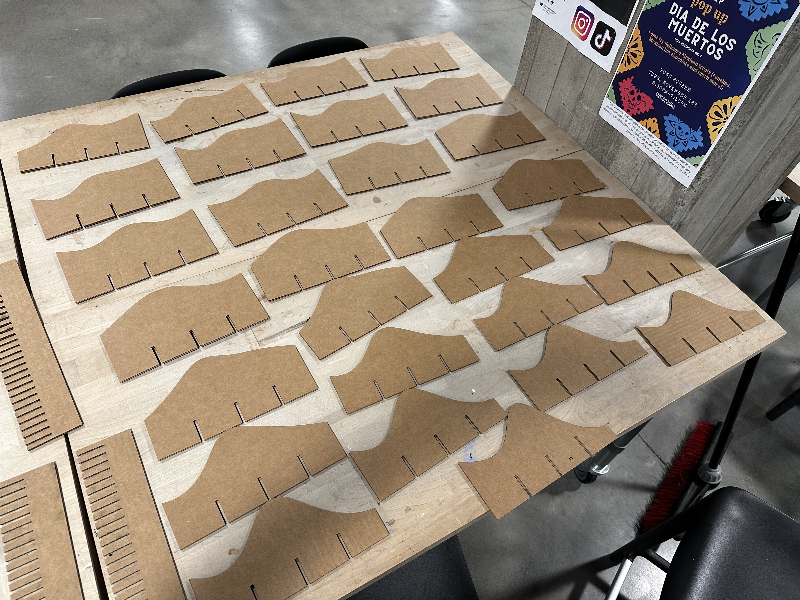
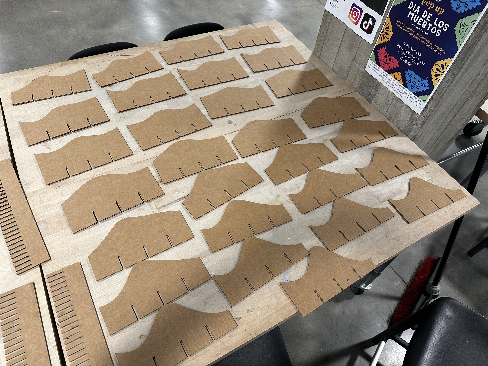

Steps
1
I started with some inspiration from Parametric
House

But unfortunately they didn't have much in the way of instructions or tutorials, so I had to figure things out on my own!
But unfortunately they didn't have much in the way of instructions or tutorials, so I had to figure things out on my own!
2
I started out with the base, which I knew would be relatively straight forward. I wanted to make 3
panels that had a certain number of notches that depended on the length of the desired piece and the
notch size (i.e., cardboard thickness)
The result was this parametric design. Using my specifications of a 15in piece with cardboard
thickness of 0.17in, this is the output of the Grasshopper calculation:
After that I got started on the panels that would be put into the notches.
After that I got started on the panels that would be put into the notches.
3
The first thing I tackled was the morphed surface that I would use to trim the plain rectangle
panels. I knew this would be the most difficult part, but luckily I found this tutorial on YouTube
for how to make such a surface:
How to make random wavy surface in Rhino
Grasshopper
I followed this tutorial to make the parametric random surface. I started with a plain rectangle that had an arbitrary width and the same length as the panels in step 2 so that they would match up. Then I divided the surface by a parametric value (in this case 5) into a grid of points. Using that list of points and the random number generator, I created some amplitude vectors to move the points in random up and down directions. Then I used the surface from points function to create a new surface using these randomly distributed points! This is what I ended up with:
I followed this tutorial to make the parametric random surface. I started with a plain rectangle that had an arbitrary width and the same length as the panels in step 2 so that they would match up. Then I divided the surface by a parametric value (in this case 5) into a grid of points. Using that list of points and the random number generator, I created some amplitude vectors to move the points in random up and down directions. Then I used the surface from points function to create a new surface using these randomly distributed points! This is what I ended up with:
4
With the tutorial done, I could get back to business! I created the basic board shape that I would
use to intersect with the surface created in step 3. I used the linear array functionality to create
copies that matched up with the length of the wavy surface (and consequently, the length of the
panels in step 2).
Then I extruded the wavy surface and used it to trim the boards and I used the boards to trim the
wavy surface, then joined the curves to create outlines.
Then I added the 3 notches which would connect to the panels from step 2 and used linear array on
those as well, then did the same intersect/join process on them.
5
Finally, the most difficult part was getting them all back on one plane and distributed evenly.
Unfortunately I could not find a way to do this in Grasshopper, but I did realize I could bake them
on top of each other and distribute in Rhino, so I did that instead!
Ultimately, my Grasshopper file ended up very complicated, but here's a high level snapshot of what each section contains!
Ultimately, my Grasshopper file ended up very complicated, but here's a high level snapshot of what each section contains!
6
With all of that done, I exported to Illustrator, arranged nicely, and headed to the laser cutter!
My laser cutter
settings were 50% power and 25% speed, on vector cut.


7
Finally I assembled!
Resources
My creations:
Grasshopper definition
Rhino file (3d and flat)
Illustrator file
External resources:Wavy surface tutorial
Rhino documentation
Grasshopper documentation
Blog on list actions
Trim/split tutorial
Lots of Rhino forum posts, Grasshopper forum posts, and Reddit posts:
1 , 2 , 3 , 4 , 5 , 6 , 7 , 8 , 9 , 10 , 11 , 12 , 13Laser cutter settings
TBD once I get to print :)